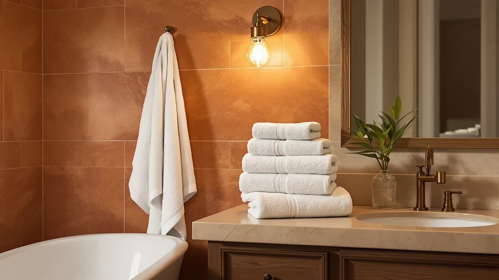

Bamboo Bath Towels vs Cotton: Which Is Better? (2026)
Prices and picks verified as of September 2026. Independent, reader-supported reviews.


Things to Know Before You Buy
- Bamboo towels are bamboo viscose, not raw bamboo fiber. Manufacturers dissolve the pulp with chemicals and re-spin it into a rayon-like thread, a process that strips out most of the plant's natural antibacterial compounds.
- Bamboo absorbs more per towel by weight than cotton. Its round, porous fiber holds roughly 40 percent more water, though a dense, high-GSM cotton terry can close part of that gap.
- Cotton tolerates hot washes and high dryer heat, bamboo does not. Repeated heat breaks down bamboo viscose fibers years faster than the same routine on cotton.
- Bulk cotton costs far less per towel. An eight-pack like the Utopia Towels 8 Piece Luxury runs about $3.75 per towel, while a bamboo viscose towel such as the Cariloha typically costs $44.00 on its own.
- Bamboo feels cooler and drapes softer against skin; cotton feels denser and plusher. That difference comes down to personal preference more than performance.
The bamboo bath towels vs cotton decision faces anyone shopping for a towel set right now, because both materials sit in nearly the same price bracket while making very different claims. Cotton has covered bathroom bars for over a century, tough and familiar. Bamboo viscose towels arrived more recently, marketed as the softer, more absorbent, eco-friendly upgrade. Both claims hold some truth, and neither fiber wins every category.
We compared the two materials across the current lineup, including the bamboo Cariloha Bamboo Viscose Bath Towels and cotton sets from Utopia, American Soft Linen, and Tens Towels, looking at absorbency, wash durability, and cost per towel. Cotton took the durability and value rounds, and bamboo took the softness and moisture-pickup rounds. Your washing habits and budget decide which fiber fits your bathroom.
Quick Answer
Cotton is the better everyday bath towel for most households: it survives hot washes, costs less per towel in a set like the Utopia Towels 8 Piece Luxury at $29.99, and holds up for years of heavy use. Bamboo viscose towels such as the Cariloha Bamboo Viscose Bath Towels ($44.00) win on softness and moisture pickup, and make sense if you wash on cool and want a spa-like feel over raw durability.
What is Bamboo Bath Towels?
Bamboo bath towels start as bamboo pulp, which manufacturers dissolve in a chemical bath and re-extrude into a continuous filament, the same viscose process used to make rayon. That filament gets spun into yarn and woven into terry loops, so a finished bamboo towel looks and feels similar to cotton terry but with a smoother, slightly cooler hand. The round cross-section of the fiber is what gives bamboo its absorbency edge, since it holds water inside the fiber itself rather than only between loops.
The Cariloha Bamboo Viscose Bath Towels in our lineup show the material at its best: a silky drape and quick moisture pickup, with less static cling than you'd get from a synthetic fiber. Bamboo also carries genuine sustainability advantages upstream, since the plant grows fast without pesticides or heavy irrigation.
The processing has real limits, though. The viscose conversion strips out most of the antibacterial and antifungal compounds bamboo has in its raw state, so "naturally antimicrobial" claims on bamboo towel packaging overstate what survives manufacturing. The fiber also weakens under high heat, which shapes how you can wash and dry it.
What is Cotton?
Cotton towels start as a natural fiber, harvested from the cotton plant, spun into yarn, and woven into terry cloth, the loop-pile fabric that has covered bathroom bars for well over a century. Each loop adds surface area, so a dense towel presents thousands of tiny absorbent points to your skin. Manufacturers measure that density in GSM, grams per square meter, and bath towels in this lineup range from around 400 GSM in lighter, quick-drying sets to 600-plus GSM in heavier, plush styles like American Soft Linen's ring-spun towels.
Quality varies with the cotton grade. Long-staple varieties, including the Turkish cotton used in the Cotton Paradise towel, produce smoother, stronger yarn that softens with washing instead of pilling. Standard upland cotton, which fills budget sets like the Utopia eight-pack and the Tens Towels four-pack, still delivers cotton's core strengths at a lower price point.
Those strengths are cotton's side of the bamboo bath towels vs cotton comparison: high total absorbency, a soft natural feel that holds up over years, and tolerance for hot water and high dryer heat, both useful for keeping a daily-use towel sanitary.
Head-to-Head: Build Quality & Durability
Cotton wins this round clearly. A well-stitched cotton towel with reinforced hems handles hundreds of hot wash cycles without breaking down, and hot water is exactly what a daily-use towel needs for hygiene. Sets like the American Soft Linen six-piece and the Utopia eight-pack follow that pattern: sturdy weave, reinforced edges, nothing that fails early. A quality cotton towel commonly serves five years or more before the pile flattens noticeably.
Bamboo wears out on a different timeline. The same chemical processing that gives bamboo viscose its softness also leaves it more fragile than cotton, and heat is the fiber's biggest enemy. One hot wash or a high-heat dryer cycle can permanently stiffen a bamboo towel and dull its absorbency. Washed cool and dried on low or air-dried, a bamboo towel like the Cariloha typically lasts two to three years, closer to the lifespan of microfiber than cotton terry.
Cotton has one early-life quirk of its own: new towels shed lint for the first several washes and arrive coated in finishing agents that block absorbency. A couple of hot washes without fabric softener resolves that and reveals cotton's full staying power in the bamboo bath towels vs cotton matchup.
Head-to-Head: Price & Value
Cotton wins on price at almost every level. The Utopia Towels 8 Piece Luxury costs $29.99, about $3.75 per towel, and the Tens Towels four-pack runs $35.99, roughly $9 per towel. The Cariloha Bamboo Viscose Bath Towel costs $44.00, and bamboo viscose towels rarely come cheaper because the fiber conversion process is more expensive than spinning raw cotton.
Stretch the math over several years and the gap widens further. A cotton set that survives five years of hot washes costs less overall than the two bamboo replacements you would likely buy in that same window. Bamboo earns its price when you want one or two premium towels for softness rather than a full bathroom set, but for value per year of use, cotton is the clear winner in this comparison.
Head-to-Head: Use Experience
Day to day, the two fibers feel distinct. Bamboo viscose has a silky, almost slippery drape against skin, cooler to the touch than cotton and lighter in hand for the same size towel. Cotton terry lands with more weight and a familiar plush texture, absorbing in longer, slower passes rather than bamboo's quick pickup. Neither feel is objectively better; it comes down to what you want a towel to feel like against your skin.
On the bar, bamboo dries reasonably fast for a natural fiber, though not as fast as microfiber, while dense cotton terry in a humid bathroom can stay damp for hours. That matters because a towel that stays wet develops odor and mildew faster. Bamboo also resists picking up smells between washes better than cotton, a genuine practical edge for anyone who forgets to launder towels weekly.
Cotton has the edge in everyday convenience. It tolerates being tossed in a hot wash with the rest of the laundry, while bamboo needs its own cool, gentle cycle to avoid damage, an extra step that adds friction to laundry day.
When to Choose Bamboo Bath Towels
Choose bamboo when softness and odor resistance matter more than raw durability or budget. That fits anyone building a spa-like guest bathroom, sensitive skin that reacts to coarser cotton terry, or a household that wants to launder towels less often without them turning sour between washes. The Cariloha Bamboo Viscose Bath Towel at $44.00 delivers that experience as a standalone upgrade piece rather than a full-set replacement.
Bamboo also appeals to buyers who weigh the sustainability angle of the raw crop, since bamboo grows quickly with minimal water and no pesticides. Just plan on a cooler wash cycle and a shorter towel lifespan than cotton, and treat bamboo as a premium accent rather than the workhorse in a busy bathroom.
When to Choose Cotton
Choose cotton for the towels you reach for every single day. Nothing in this bamboo bath towels vs cotton comparison matches cotton's combination of hot-wash tolerance, long lifespan, and low cost per towel, which makes it the default for a daily bath towel. The Utopia Towels 8 Piece Luxury at $29.99 outfits a whole bathroom for less than the price of one bamboo towel, and the American Soft Linen sets add a plusher, more premium feel at a similar price point.
Cotton also makes sense anywhere towels take heavy use: households with kids, guest bathrooms, gyms, and short-term rentals all demand frequent sanitizing washes, and cotton shrugs those off while bamboo would degrade quickly under the same routine. If your towel needs to survive years of hot laundry without special handling, cotton is the fiber built for that job.
Our Top Picks
These three towels put the bamboo bath towels vs cotton comparison into practice: a bamboo upgrade pick for softness, a budget-friendly cotton set for everyday durability, and a premium cotton set for households that want plushness without switching fibers.

Editor’s Pick
Cariloha Bamboo Viscose Bath Towels
A $44.00 bamboo viscose towel with a silky feel and fast moisture pickup, the pick to try if you want to see what bamboo does better than cotton.
$44.00
Check Price on Amazon
Best Value
Luxury White Bath Towel Set
A white cotton towel set at $39.99 built for frequent hot washes, the practical everyday choice this comparison keeps pointing back to.
$39.99
Check Price on Amazon
Premium Choice
American Soft Linen Luxury 6
A six-piece ring-spun cotton set at $39.99 with a plusher hand than standard terry, for anyone who wants cotton's durability with extra softness.
$39.99
Check Price on AmazonAre bamboo towels more absorbent than cotton?
Yes, by most measurements.
Do bamboo towels hold up as long as cotton towels?
No, not under the same care.
Frequently Asked Questions
Are bamboo towels more absorbent than cotton?
Do bamboo towels hold up as long as cotton towels?
Is bamboo or cotton cheaper per towel?
Are bamboo towels naturally antibacterial?
Can you wash bamboo and cotton towels together?
Final Verdict
In the bamboo bath towels vs cotton matchup, cotton wins the everyday bathroom and bamboo wins the upgrade shelf. For daily use, start with the cotton Utopia Towels 8 Piece Luxury at $29.99. It's under $4 per towel, it shrugs off hot washes, and it'll still be in your linen closet in five years. If you want to feel what bamboo does differently, add one Cariloha Bamboo Viscose Bath Towel at $44.00 and give it its own cool wash cycle. Most bathrooms do best with a cotton foundation and a bamboo accent, not an all-or-nothing choice between the two.